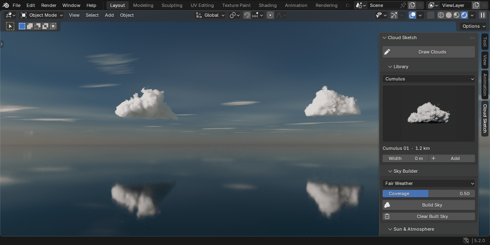
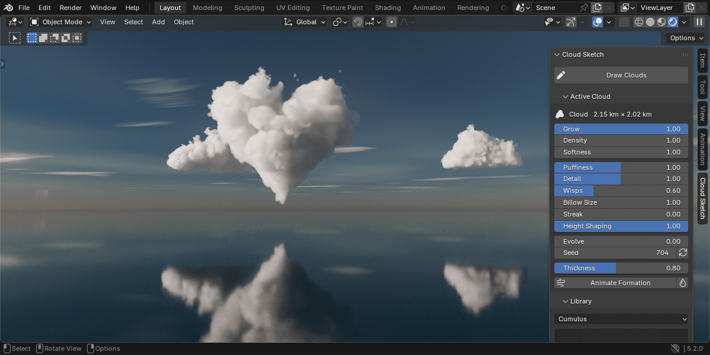
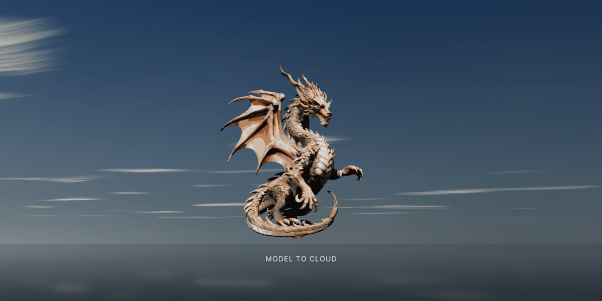
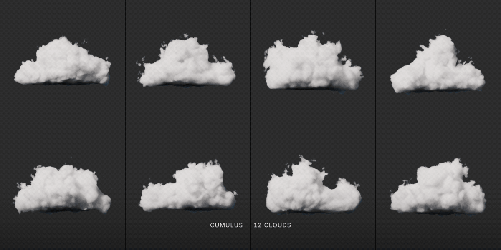
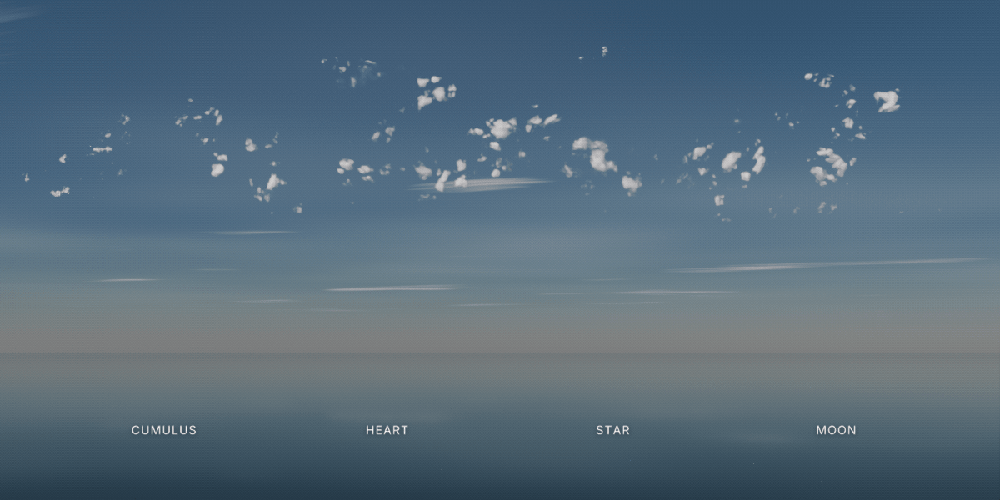
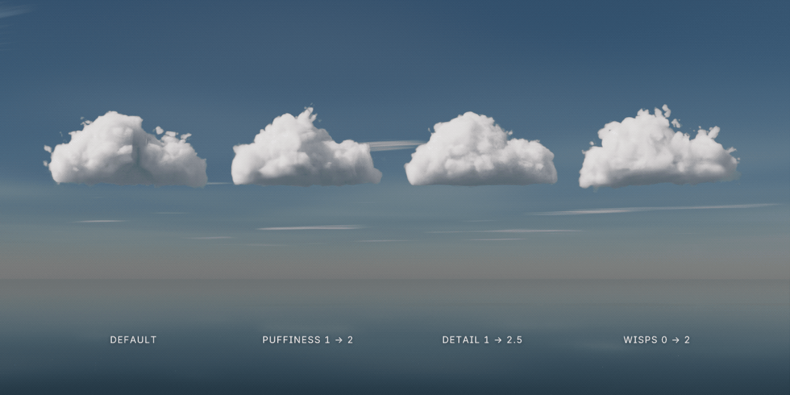
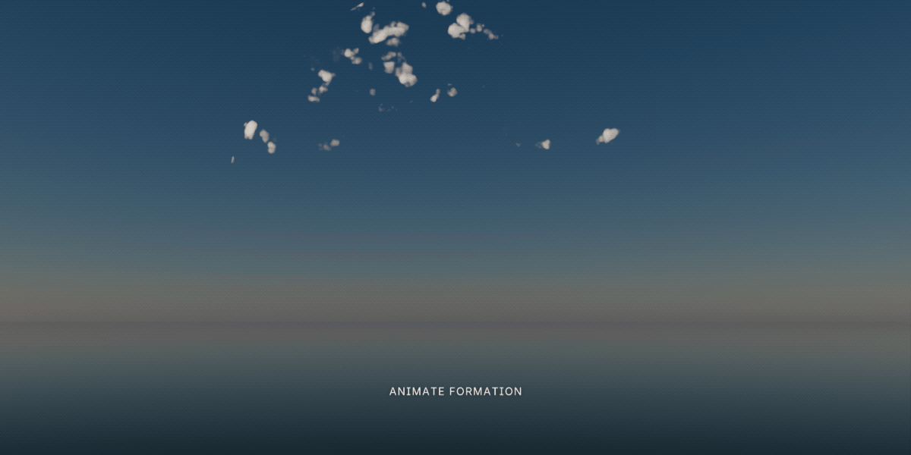
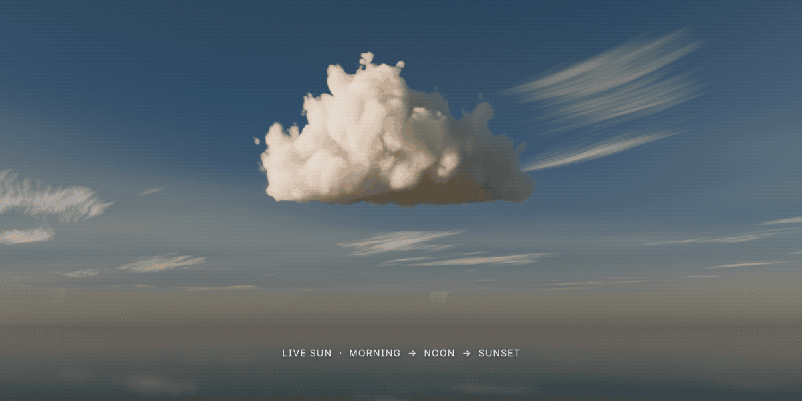

Blender add-on · v0.3.0
Draw a shape in the 3D viewport and it becomes a volumetric cloud. Turn any 3D model into a cloud, pick from 68 library clouds, or fill the whole sky in one click.
Draw clouds
Most cloud tools hand you someone else's shapes. Cloud Sketch lets you draw the silhouette you actually want: a heart for a wedding shot, a rabbit for a children's film, a towering cumulus to frame a mountain.

Click Draw Clouds and sketch a closed shape over your scene. Orbit or zoom between strokes and keep drawing.
The outline is inflated into 3D. Wide areas get deep and round, thin parts stay slender, the way real clouds read.
Puffiness, detail, wisps, softness and density update live in the viewport, and every one can be keyframed.

Model to Cloud · new in 0.3
Select meshes, text objects or curves and click Model to Cloud. Each model is hidden and a cloud of its shape takes its place.

Sky Builder · new in 0.3
Pick a weather, set Coverage and click Build Sky. Clouds, sun, atmosphere and haze are set up around your active camera.
Cloud Library · new in 0.3
Choose a category, click a preview and press Add. The cloud appears at the 3D cursor, facing the view, at a real-world size you can change.

Any shape
Concave, spiky or round, the cloud keeps the outline you drew. Shapes are inflated with a Poisson solve instead of a flat extrusion, so a circle becomes a sphere and a long limb becomes a tube.

Live controls
The shader reads each value straight away, so nothing needs rebaking.

Animation

Sun & Atmosphere
Everything updates live in the Rendered viewport. Your own HDRI and lights work too.

Built for production
cloud_sketch-0.3.0.zip: the extensionCloud_Sketch_Demo.blend: the featured scene, ready to renderBlender 5.0 or newer. Cycles is recommended for final renders; a GPU makes volumes much faster.
Edit › Preferences › Get Extensions › Install from Disk, then press N in the viewport and open the Cloud Sketch tab.